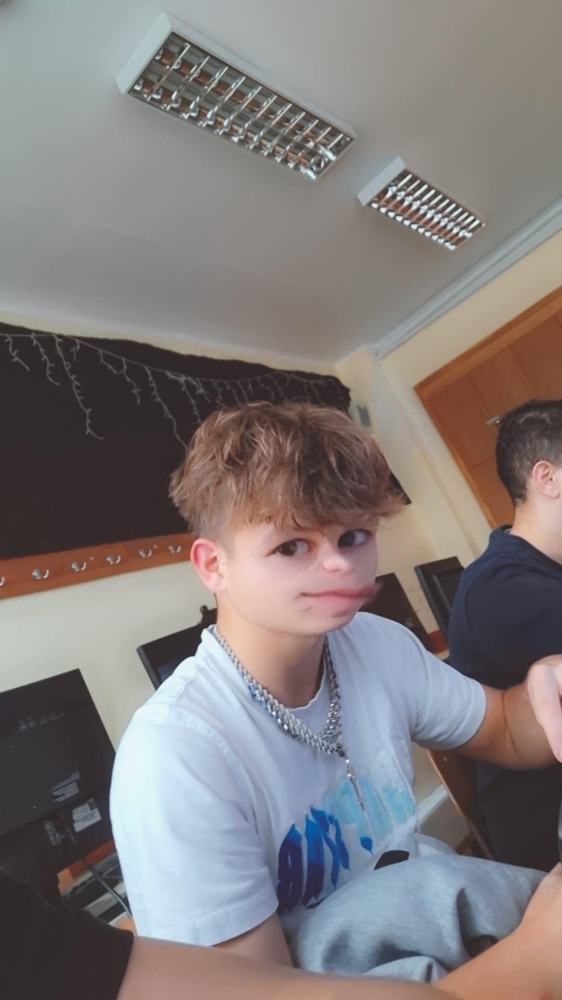
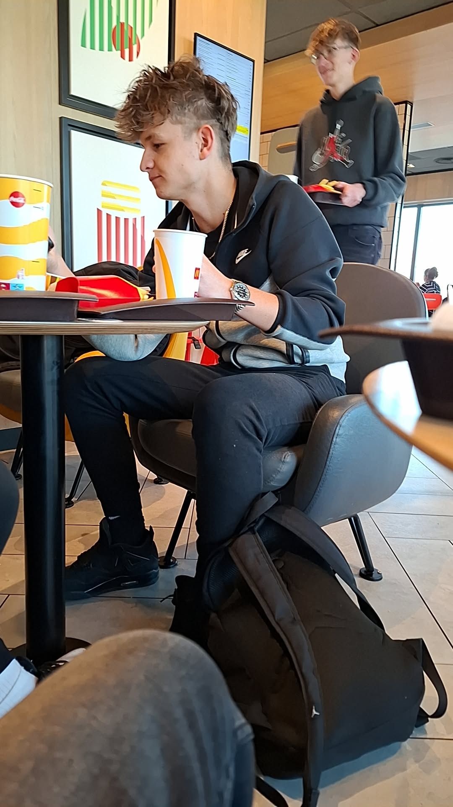

|
  
|
Személyes adatokNév: Szeberényi LeventeNem: Férfi Születési hely: Afrika Születési idő: 2015 Állampolgárság: Kongói Kedvenc zenéje: |
Története:Szeberényi Levente – vagy ahogy a haverok hívják: „A McDón Penge” – már első ránézésre is olyan figura, aki képes egyszerre koncentrálni: a sültkrumplira, az élet nagy kérdéseire, és arra, hogy ne ejtse el a szószt a cipőjére. Születési hely: Afrika A legenda szerint Levente valahol Afrika szívében született, egy olyan helyen, ahol a nap is csak napszemüvegben kel fel. A helyiek azt mondják, hogy ő már babaként is úgy nézett, mint aki bárkinek visszakérdez: „Biztos?” Születési idő: 2015 Amit sejthetünk ebből: Levente valószínűleg fiatalabbnak tűnik, mint amennyi, vagy idősebbnek, mint kéne, esetleg pont annyi, mint amennyinek látszik – de ez utóbbi a legritkább. A baráti kör szerint Levente a 2015-ös évből hozta magával azt a különleges képességet, hogy minden helyzetben talál ételt. Ha nincs, akkor csinál. Állampolgárság: Kongói Bizony, Levente egyenesen a Kongó Mentalitás Embere™. Ez azt jelenti, hogy: sosem izgul, mindig talál valami megoldást, és képes olyan természetességgel enni bárhol, mintha otthon lenne. A fotón is látszik: teljesen bele van merülve az evésbe, mintha egy Michelin-csillagos étteremben lenne – csak itt a csillag a csomagoláson van. A McDonald’s Harcmező Mestere A fő képen Levente úgy ül az asztalnál, mintha épp végső döntést hozna: „Megbízhatok-e ebben a sültkrumpliban… vagy kell még egy adag?” A táskáját a lábánál tartja, mintha bármikor menekülni kellene a kasszánál kialakuló sor elől. Az arckifejezése azt üzeni: „Ez most az én időm.” A mellékképek szerint Levente több formában létezik: A Sybau-s alteregó – ahol láthatóan ő is a Multiverzum része. A családi idill hőse – valaki puszilja, ő pedig olyan arcot vág, mint aki tudja: itt fotó készül. A kajás király – a fő kép nagytestvére, még komolyabb falatozással. A negyedik ikon – ahogy mindig: a rejtély. |
Kapcsolódó körözésekTanár bosszantása – Btk. 420.§Órai rendbontás – Btk. 666.§ |